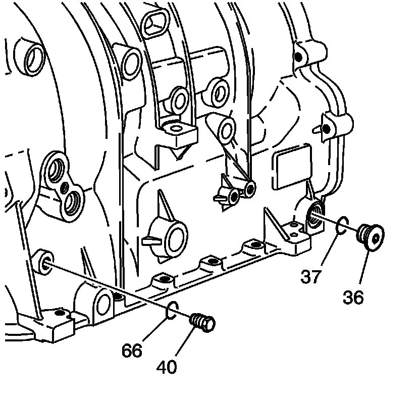

Case Components Assemble
Case Components Assemble

Important: If the pressure test plug (40), O-ring (66), level hole plug (36) and O-ring (37) are not damaged, they should be reused.
1. Inspect the pressure test hole plug (40) and O-ring (66) for damage.
Notice: Refer to Fastener Notice .
2. Install the pressure test plug (40) and O-ring (66).
Tighten the pressure test plug to 11N.m (8 lb ft).
3. Inspect the level hole plug (36) and O-ring (37) for damage.
4. Install the transmission fluid level hole plug O-ring (37) and the transmission level hole plug (36).
Tighten the level hole plug to 20N.m (15 lb ft).